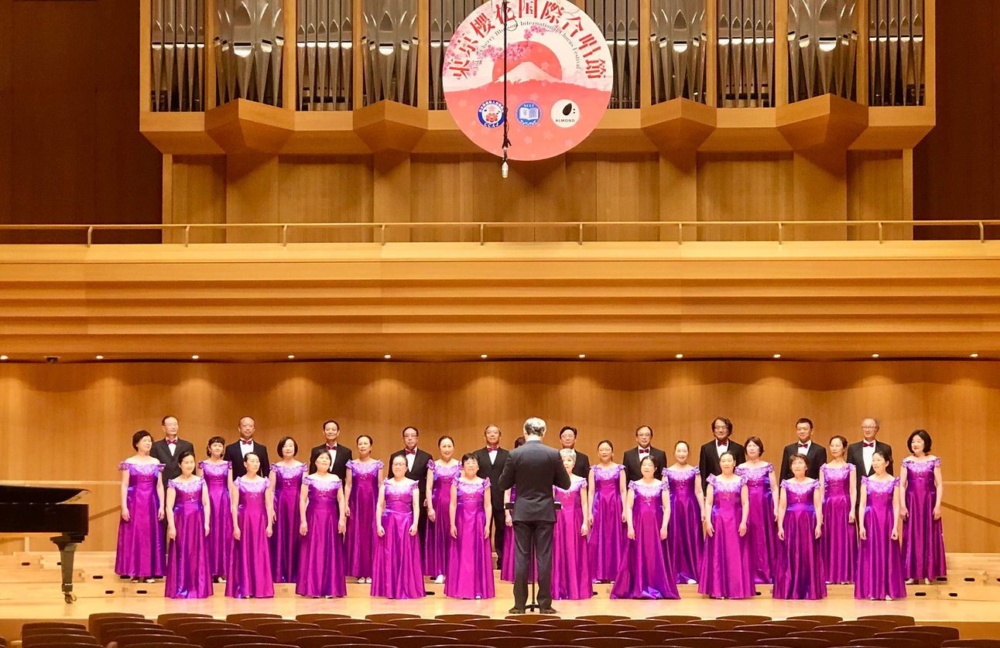
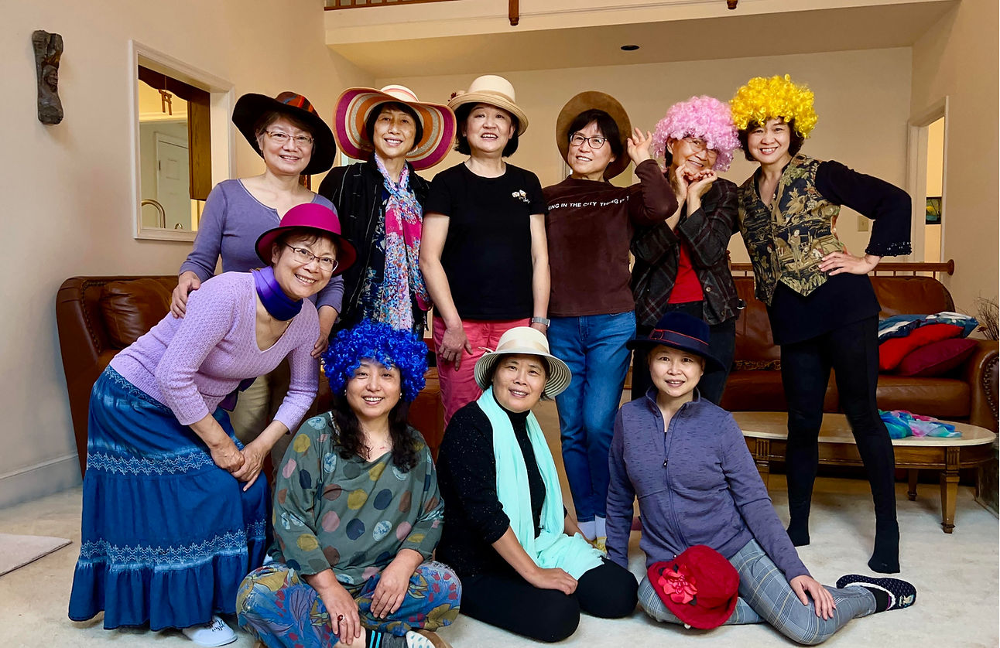
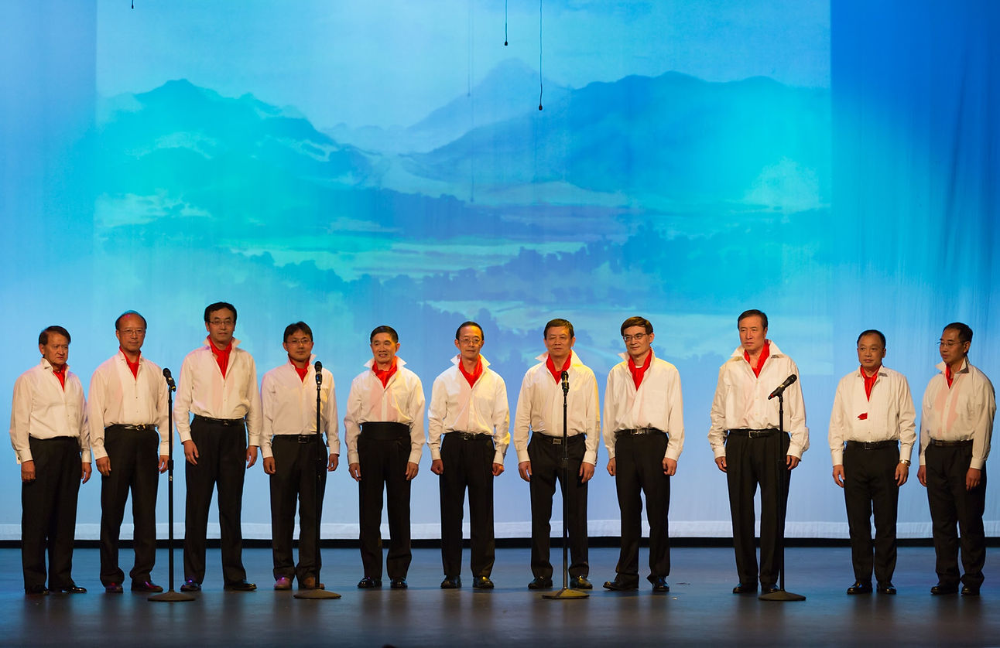
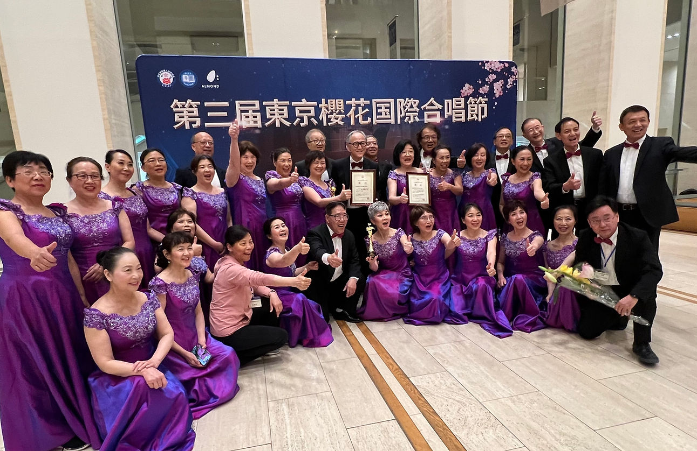
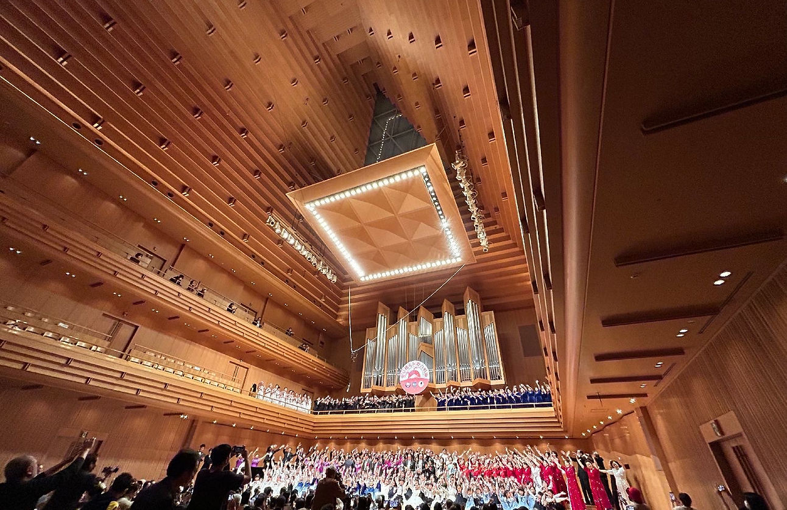

关于我们
黄河艺术团（Yellow River Art Ensemble）成立于1994年, 自建团以来，黄河艺术团积极参与社区活动和对外演出，诸如中国文化节、海华文艺季、老人社义演、赈灾义演、摩门教圣殿灯饰节庆音乐演唱会、和平颂国际巡演、中外歌剧音乐剧金曲音乐会以及与国际中国环境基金会合办的绿色中国公益环保音乐会,抗战纪念音乐会, 大型交响音乐会奔向未来以及大华府元旦、春节和元宵晚会等各种演出活动。为丰富广大侨胞的文艺生活，我们每年举办黄河品牌“金秋月圆”音乐会, 使黄河艺术团成为在美国大华府广受欢迎的华人文艺团体之一。
建团30周年征文

时间过得真快，弹指之间，黄河艺术团已经走过了整整30年。作为身在华府的一支艺术团体，“黄河”带给大家的不仅仅是舞台上莺歌燕舞的精彩表演，还有它对中国文化的传承和发扬，以及对于华府社区的重要贡献。从今天开始，请大家跟随“黄河人”一清晰而鲜活的脚印，去分享“黄河”以及“黄河人”那些生动感人的故事。